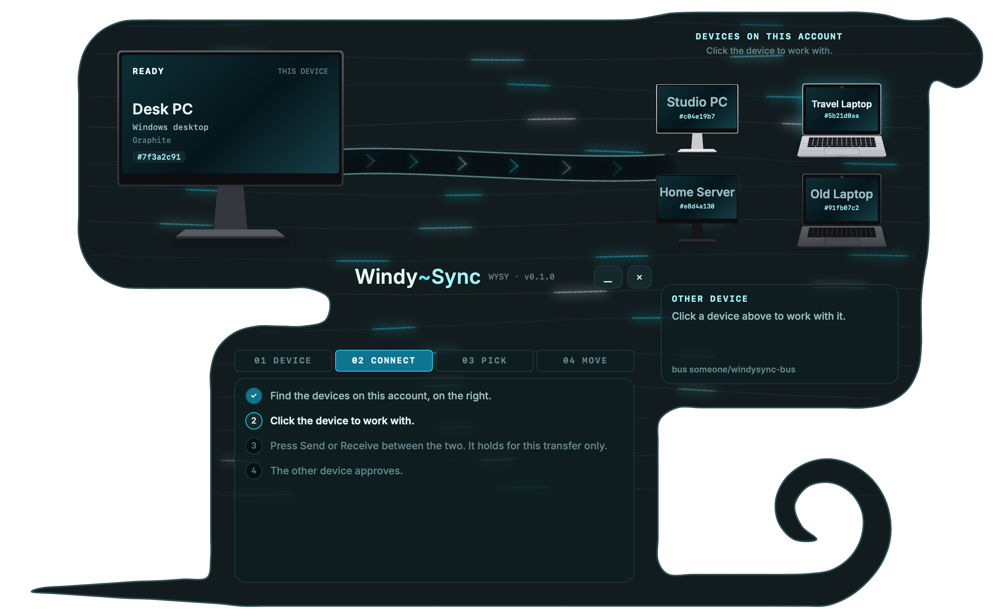

Windy~Sync bir Windows PC'nin kurulumunu diğerine taşır: editör ayarları, SSH ve GnuPG anahtarları, PowerShell profili, yer imleri, klasörlerin ve winget ile Scoop'un kurduklarının listeleri. Dosyalar doğrudan PC'den PC'ye, uçtan uca şifreli gider; bir not da yapay zekâ ajanına geriye ne kaldığını söyler.
PC'lerin senin özel bir GitHub deponda buluşur. Dosyalar oraya hiç gitmez: bir PC'den diğerine gider.
01
Her PC gönderir, her PC alır
Bir uzak masaüstü uygulaması gibi: diğer PC'yi seç, sonra gönder ya da al. Yalnızca o aktarım için geçerli.
02
Bir PC'den diğerine
01
Bul
Hesabındaki PC'ler masaüstü ve laptop olarak çıkar. Birine tıkla, seç.
02
İste
Göndermeyi ya da almayı seç. Diğer cihaz sahibinden onay ister.
03
Seç
Gönderen elindekini bir ağaç olarak sunar; yeni PC'nin alacaklarını sen işaretlersin.
04
Taşı
Yalnızca seçilenler gider, doğrudan ve şifreli. Bağlantı koparsa eksik kalanlar yeniden istenir.
05
Bitir
Her öğe yerine iner; GOAL.md de yapay zekâ ajanına geriye ne kaldığını söyler.
03
Windows'un tuttuğu yere iner
Her öğe, yeni PC'nin kendi kullanıcı klasörleri altındaki yerini bilir; oradaki kullanıcının adı ne olursa olsun.
Öğe
İndiği yer
Sonra
VS Code ayarları
%APPDATA%\Code\User
eklentiler listeden yeniden kurulur
PowerShell profili
%USERPROFILE%\Documents\PowerShell
olduğu gibi yerleşir
GnuPG
%APPDATA%\gnupg
olduğu gibi yerleşir
Edge yer imleri
%LOCALAPPDATA%\Microsoft\Edge\User Data\Default
yerleşmeden önce Edge kapatılır
winget paketleri
lists\winget.txt
ajanın winget import çalıştırır
Orada zaten olan ne varsa yanında .before-windysync olarak saklanır. Kullanıcı klasörünün yeni PC'de başka bir adı varsa (C:\Users\ege yerine C:\Users\ege.b), not hâlâ eskisini anan ayarları listeler.
Bu PC hep solda, diğeri sağda; çizgiler gönderenden alana akar.

01 · Bu hesaptaki PC'ler02 · Gönder ya da al, bu aktarım için03 · Diğer PC onaylar04 · Yeni PC'nin alacaklarını seçGönderiliyor: çizgiler alana doğru akarBitti: not ajanın için hazır
Taşınırken
Neler taşınır, neler kalır
WindySync bir PC'yi senin yapan ayarları ve dosyaları taşır, temiz bir başlangıca bıraktıklarını da açıkça söyler.
Taşınanlar
Dosyalar: Masaüstü, Belgeler, İndirilenler, Resimler, Müzik ve Videolar; her üst öğe ayrı seçilir. node_modules, target, .venv gibi kaynaktan yeniden kurulan klasörler geride kalır.
Kabuk ve git: git ayarı, SSH ve GnuPG anahtarları, PowerShell profili.
Editörler ve terminaller: VS Code, Cursor, Zed, Wave.
Notlar, tarayıcılar, yapay zekâ araçları: Obsidian kasa listesi, Edge, Chrome, Brave ve Chromium yer imleri, Claude Code, Codex.
Kurulu araçların listeleri: winget, Scoop, npm, cargo, pipx, VS Code ve Cursor eklentileri.
Kalanlar, ve nedeni
Programların kendisi: kopyalanmaz, winget ve Scoop listelerinden yeniden kurulur.
Tarayıcıda kayıtlı şifreler: Windows onları eski PC'nin hesabı için DPAPI ile mühürler. Tarayıcının kendi eşitlemesini ya da şifre dışa aktarmasını kullan.
Windows ayarları, kayıt defteri ve PC'nin kimliği: Tailscale düğümü, uzak masaüstü kimlikleri gibi.
Girişler: yapay zekâ araçlarına ve uygulamalara yeni PC'de yeniden giriş yapılır.
Depoda
GitHub'da yalnızca tanışma durur.
sen/windysync-bus/# özel
├── devices/
│ ├── 7f3a2c91.json # ad, sistem, görünüm, açık anahtar
│ └── c04e19b7.json
├── requests/ # gönder ya da al, onay bekler
└── transfers/
└── 20261126-1605_7f3a2c91_c04e19b7/
├── session.json # ilerleme
├── offer.sealed # gönderenin sundukları
├── picks.sealed # alanın seçtikleri
└── key.sealed # akış anahtarı ve adres
GitHub'a asla gitmeyenler
Dosyaların: PC'den PC'ye giderler
Taşıdıkların hakkında okunabilir hiçbir şey: teklifler ve seçimler mühürlü
GitHub girişin: WindySync onu her seferinde GitHub CLI'dan ister
İşaretlemediğin her şey
Aile
Tek aile, her türlü taşıma
Aynı yapımcı, aynı görünüm. Aynı sistemden aynı sisteme taşıyanlar en derine iner, çünkü iki uç da aynı yolları ve ayarları paylaşır; AnySync sistemler arasında geçer; WavySync de Wave Terminal'i her yerde aynı tutar.